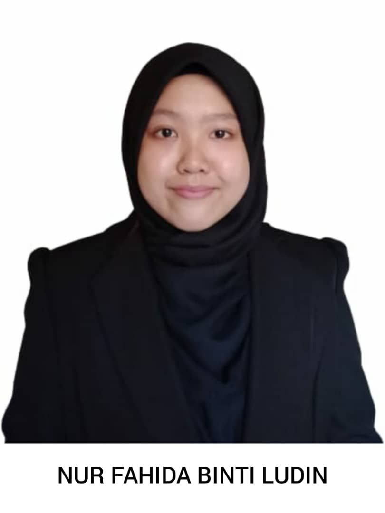
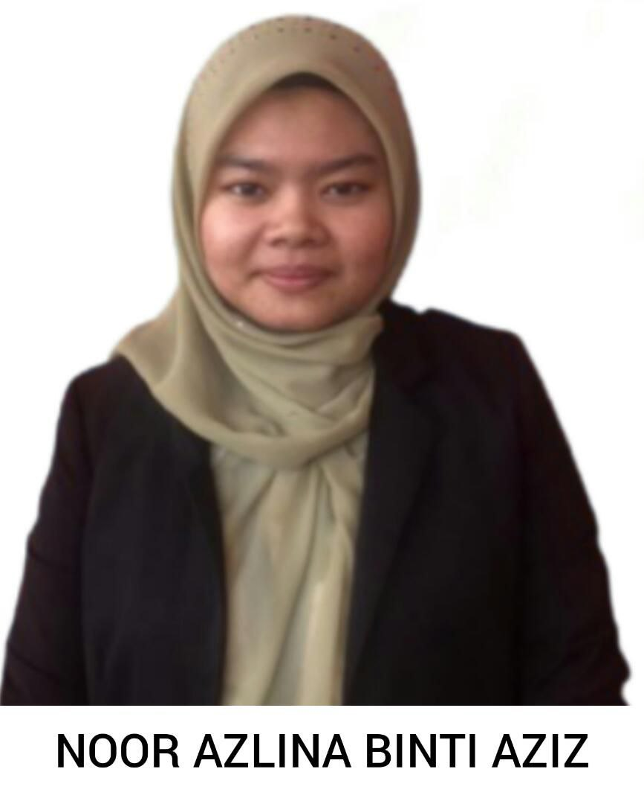
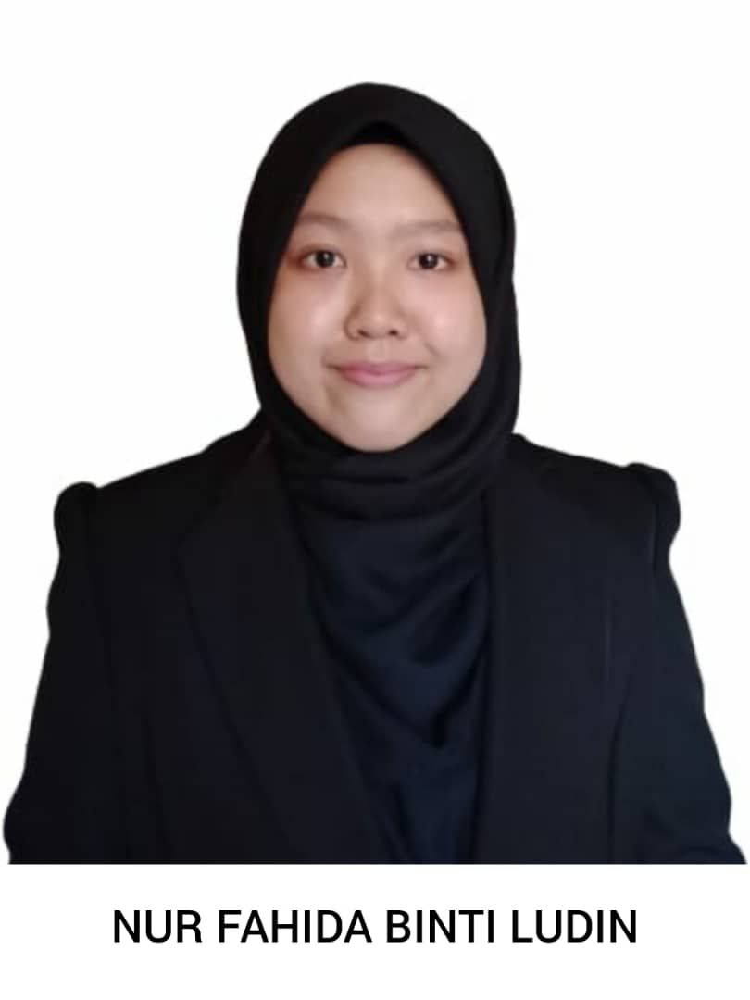
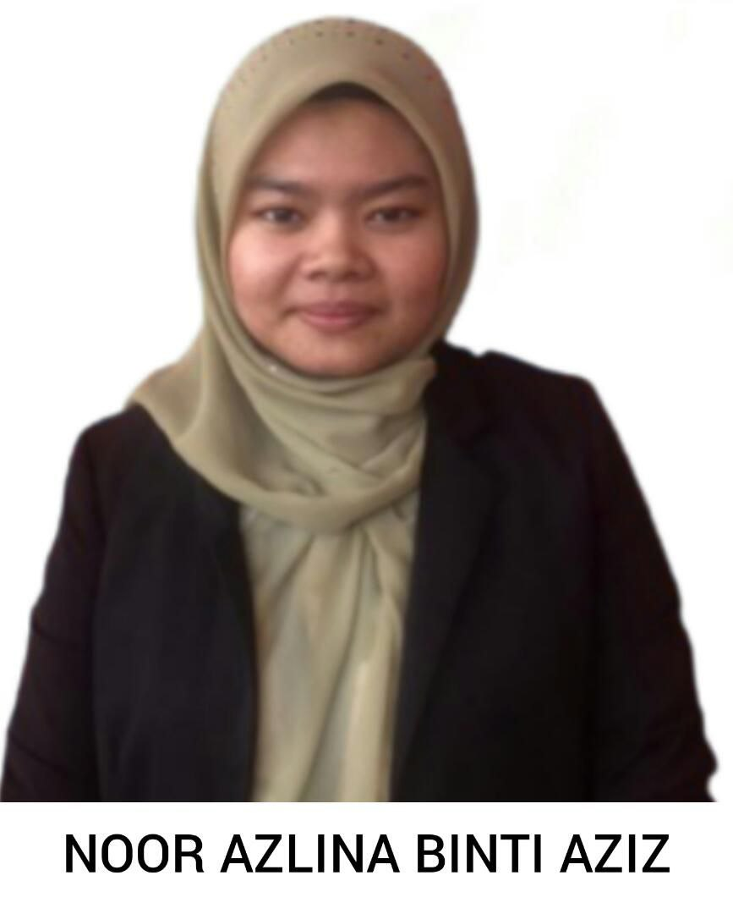

Company Background
Jelita Hijab Collection Sdn Bhd is a company in Malaysia, headquartered in Petaling Jaya. It was established on December 8, 2021. Jelita Hijab Collection is a manufacturer, supplier, designer, wholesaler, and retailer of branded and exclusive hijabs, namely "tudung bawal". By emphasising the Swarovski element, we created our ‘taboo veil’ with stunning Swarovski crystal embellishments. The Jelita Hijab Collection focuses on the quality of our products by using superior quality materials such as "voil" imported from Japan, and our partnership with Swarovski Elements allows us to acquire genuine and top-tier Swarovski crystals from Austraulia. Jelita Hijab Collection is managed and led by a team of friends, namely Fatin, Fahida, Elisa, and Azlina, who are highly capable in the world of business and marketing. In collaboration with Swarovski, our collection of scarves stands out exclusively in its own class.
 


